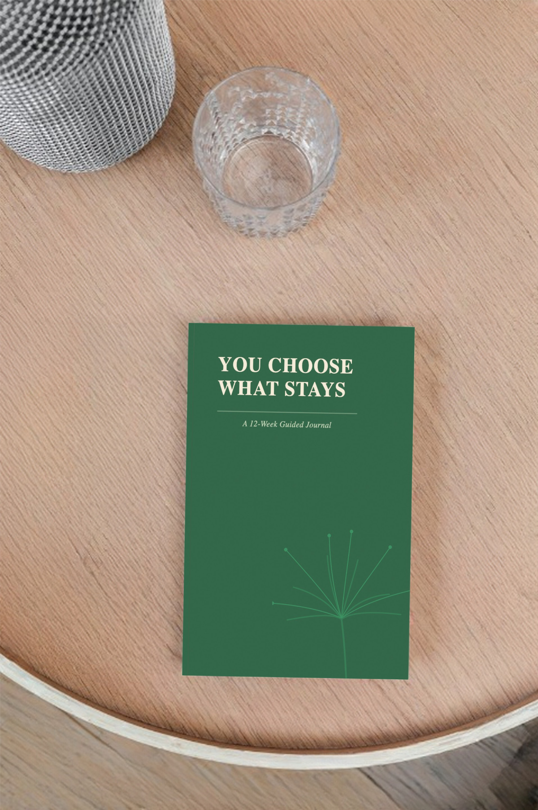

I finished. I'm looking for my people.
Ninety days alone builds a private language. The community is yours to share that language with. The wins, the hard parts, all of it.
Enter NEW HEREI'm new here. Tell me more.
Welcome. We reject toxic positivity and mechanical performance. Bring yourself, your curiosity, and your willingness to learn what honest change demands of you and what makes it stick.
Start hereWho've sat with hard questions long enough to stop expecting easy answers. Some arrive having done the ninety days. Some arrive still deciding.
Either way, you know what it takes to sit with the patterns that run you, the discomfort that comes with the gap between knowing and doing, which is what most people spend their lives running from, without ever knowing they're running.

Twelve weeks of raw inner work opens new alleys, new hope. You now have tangible tools to create the change you've longed for. But this inner work has also silently developed something alongside you, elusive and entirely private. It's a language for the exact shape of what lingers in you and can now be named. It's a language that can identify the moments before those patterns run you. The one that grants you access to words to describe the gaps you keep finding in your behavior, old and new. And it's a language you share with everyone who has done this alongside you.
The people here built the same language. Someone at a kitchen table at 6am, someone on a train, someone in the particular silence of a house, finally gone quiet.
Each of them alone.
But on the same pages.
Through the same process.
When someone reads what you wrote about a setback, and responds not with advice but with "oh, I know that," something shifts in both of you. The shame, the solitude, the stuckness. The resistance drops. The isolation lifts. The change deepens.
"Avoidance is efficient for the brain. But efficiency is not always aligned with what you desire."
There's a moment before you answer. Before you soften. Before you move away from what was clear.
This journal lives there.
For people who are done with surface-level reflection.
You'll have twelve weeks with daily pages, structured around weekly patterns. A model designed for how change actually happens, in the moment you usually don't even notice.
You won't be exposed to toxic positivity. There will be no performance prompts. No noise to filter through. We'll give you the right tools that help keep you in the moment long enough to see the pattern, name it, and decide what comes next.
About the journalA page from inside the journal · Week 3
The human nervous system optimizes for efficiency. Repeated actions become easier because the neural pathways supporting them become more efficient. When neurons activate together repeatedly, their connections strengthen, a process known as Hebbian learning. What is practiced becomes faster. What becomes faster requires less conscious effort.
Habits form through repetition and reinforcement. When a behavior produces relief, resolution, or completion, the brain registers it as worth repeating. Dopamine (a neurotransmitter released in moments of reward and relief, central to how the brain learns what to repeat) helps mark actions that successfully resolve a prediction. The association between cue and behavior strengthens.
Over time, repeated behaviors shift from deliberate control to automatic execution. The basal ganglia (a cluster of structures deep in the brain that store and trigger learned sequences) help store and trigger learned patterns. The prefrontal cortex (located at the front of the brain, responsible for deliberate decision-making and conscious choice) becomes less involved once the pattern is well established. Efficiency increases. Effort decreases.
The same mechanism applies to emotional and relational behavior. Emotional reactions, conversational styles, withdrawal, confrontation, silence, over-explanation: all can become efficient through repetition alone.
This is why change feels difficult.
Interrupting a habit requires engaging conscious control in moments where an older pathway has already been primed through repetition.
Changing direction requires repetition as well.
Each time you practice a different response, alternative neural pathways are activated. If repeated, these pathways undergo long-term potentiation (a measurable strengthening of synaptic transmission that makes the new response progressively easier to initiate).
Older pathways weaken primarily through lack of reinforcement. New pathways strengthen through consistent activation.
Repetition accumulates.
The nervous system reduces friction around what is practiced. What requires less friction happens more easily. What happens more easily happens more often.
Over time, frequency begins to feel like identity.
The same mechanism that automated the old pattern can automate a new one.